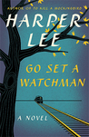
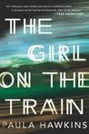
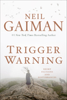

Go Set a Watchman by Harper Lee

From Harper Lee comes a landmark new novel set two decades after her beloved Pulitzer Prize-winning masterpiece, To Kill a Mockingbird.
Maycomb, Alabama. Twenty-six-year-old Jean Louise Finch "Scout" returns home from New York City to visit her aging father, Atticus. Set against the backdrop of the civil rights tensions and political turmoil that were transforming the South, Jean Louise homecoming turns bittersweet when she learns disturbing truths about her close-knit family, the town and the people dearest to her. Memories from her childhood flood back, and her values and assumptions are thrown into doubt. Featuring many of the iconic characters from To Kill a Mockingbird, Go Set a Watchman perfectly captures a young woman, and a world, in a painful yet necessary transition out of the illusions of the past - a journey that can be guided only by conscience.
The Girl on the Train by Paula Hawkins

A debut psychological thriller that will forever change the way you look at other people's lives.
Rachel takes the same commuter train every morning. Every day she rattles down the track, flashes past a stretch of cozy suburban homes, and stops at the signal that allows her to daily watch the same couple breakfasting on their deck. She's even started to feel like she knows them. "Jess and Jason," she calls them. Their life as she sees is perfect. Not unlike the life she recently lost.
Trigger Warning by Neil Gaiman

In this new anthology, Neil Gaiman pierces the veil of reality to reveal the enigmatic, shadowy world that lies beneath. Trigger Warning includes previously published pieces of short fiction stories, verse, and a very special Doctor Who story that was written for the fiftieth anniversary of the beloved series in 2013 as well "Black Dog," a new tale that revisits the world of American Gods, exclusive to this collection